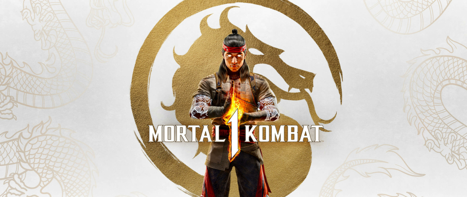

Mortal Kombat 1
Quality Assurance Analyst

Responsibilities: During this project, my responsibilities were to ensure that different teams were informed of any issues that I encountered.
I collaborated with the design team to address gameplay problems and worked with the art team to ensure all art elements were implemented seamlessly.
Additionally, my role involved certification testing for both PlayStation and Xbox platforms, validating that the project met and surpassed the qualifications for both consoles.
Challenges: The main challenge I encountered during this project was understanding Mortal Kombat’s gameplay mechanics.
While I had some understanding of the fighting game genre, I had to broaden my understanding of both the fighting game genre and the specific details of Mortal Kombat.
This included learning and understanding fighting game terminology like “plus-on-block” and “special cancel”, along with learning Mortal Kombat-specific terms like “up block”.
Follow that Pipe
Systems Designer
Project Length: 12 Weeks | Team Size: 12 | Engine Used: Unity

Responsibilities: I designed puzzles for kids, featuring pipes they could place before time ran out.
My role also involved playtesting these puzzles to ensure they were solvable and suitable for kids aged 4-12.
Challenges: The challenge I faced during this project was ensuring the puzzles were just right for kids—neither too easy nor too hard.
They needed to be challenging, engaging, and fun. Since we lacked playtesters from our target audience, the design team, including myself, playtested the puzzles.
We frequently encountered the problem of having overly complex puzzles.
To address this, I suggested gradually increasing the puzzle difficulty as the game progressed.
Completing each level would make the puzzles a bit more challenging, striking the right balance between simplicity and difficulty.
Abiogenesis
Level Designer
Project Length: 13 Weeks | Team Size: 4 | Engine Used: Unity

Responsibilities: I served as the team's level designer, responsible for crafting initial greybox levels and enriching the environment through color schemes and prop placement.
Challenges: The main challenge was crafting an alien world from scratch, especially with no prior level design experience.
I needed to make something unique while still telling a story through the level. In our game concept, players would experience the planet in different time settings.
The present portrayed a barren landscape, while another time setting was vibrant with life.
I created contrasting levels to represent these settings. To overcome this challenge, I extensively researched reference art and conducted numerous prototypes, testing various environmental colors.
The X'Tal
Systems Designer
Project Length: 12 Weeks | Team Size: 11

Responsibilities: As the systems designer, I managed the design and balance of project mechanics.
I created new units with their designs and mechanics, and my tasks involved balancing weapon costs and playtesting stratagems.
Challenges: My main challenge was staying aligned with the lore team. I aimed to ensure that my designs and balances stayed true to the established lore.
Early on, there was a conflict between our unit designs and how the lore team was describing them.
To prevent future issues, I suggested having a systems team member, often myself or the team lead, attend lore team meetings. This significantly improved communication between the teams.